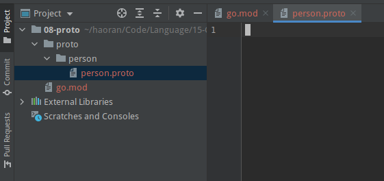
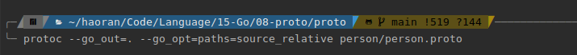
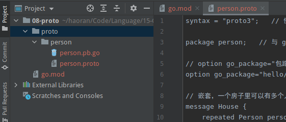
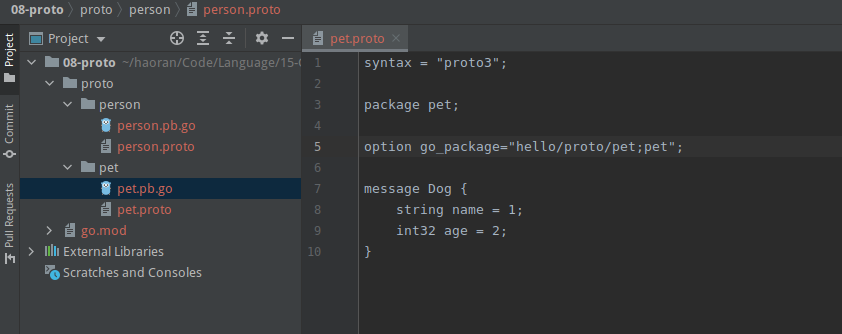

PROTOC
Table of Contents
protobuf 在 go 项目中的基本使用
- 初始化 go.mod：
go mod init hello - 在项目中创建一个 proto 文件夹用来存放项目所需要的所有的 protobuf 文件。
- 在 proto 中分包，在 proto 文件夹下创建 person 文件夹，用来存储有关 person 的 protobuf。
在 person 文件夹下创建一个 protobuf 文件。

定义一个 person 结构体。
syntax = "proto3"; // 使用 proto3 解读这个 proto package person; // 与 go 项目中的 package 有所不同，是指 proto 文件所在的包 // option go_package="包路径（从mod下开始写）;别名;" option go_package="hello/proto/person;person"; // 相当于别名还是 person // 嵌套，一个房子里可以有多个人 message House { repeated Person persons = 1; message Dog { string name = 1; int32 age = 2; } Dog dog_one = 2; } /* protobuf 的正式语句 * 下面这段相当于 go 中的结构体 * 遵循 golang 的规则，变量名大写 */ message Person { // 类型，结构体中的变量，唯一标识符 string name = 1; int32 age = 2; bool sex = 3; repeated string test = 4; // map 第一个参数只能是 string 或者 int // 第二个参数都可以，甚至可以递归 map <string, Person> mp; map <string, string> test_map = 5; }
把 proto 文件中的内容解析为数据结构
 protoc --go_out=. --go_opt=paths=source_relative person/person.proto # 把 person 目录下的 person.proto 文件中的内容解析为数据结构，输出的 go 文件在 person 目录下
查看生成的 go 文件
// protobuf 的正式语句 // 下面这段相当于 go 中的结构体 // 遵循 golang 的规则，变量名大写 type Person struct { state protoimpl.MessageState sizeCache protoimpl.SizeCache unknownFields protoimpl.UnknownFields // 类型，结构体中的变量，唯一标识符 Name string `protobuf:"bytes,1,opt,name=name,proto3" json:"name,omitempty"` Age int32 `protobuf:"varint,2,opt,name=age,proto3" json:"age,omitempty"` Sex bool `protobuf:"varint,3,opt,name=sex,proto3" json:"sex,omitempty"` Test []string `protobuf:"bytes,4,rep,name=test,proto3" json:"test,omitempty"` // map 第一个参数只能是 string 或者 int // 第二个参数都可以，甚至可以递归 map <string, Person> mp; TestMap map[string]string `protobuf:"bytes,5,rep,name=test_map,json=testMap,proto3" json:"test_map,omitempty" protobuf_key:"bytes,1,opt,name=key,proto3" protobuf_val:"bytes,2,opt,name=value,proto3"` }
这段是 person 结构，注释也保留了下来。
字段作废
message Person { string name = 1; int32 age = 2; bool sex = 3; repeated string test = 4; map <string, string> test_map = 5; reserved "test_map", "test_string"; // 将这些字段保留 reserved 6; // 还可以保留唯一标识 }
枚举
message Person { string name = 1; int32 age = 2; bool sex = 3; repeated string test = 4; map <string, string> test_map = 5; // 枚举类型一定要有一个 0 值 enum Hobby { PingPong = 0; Badminton = 1; Tennis = 2; Swim = 3; } // 定义一个枚举类型后使用它 Hobby hobby = 7; }
golang 并没有枚举，这里是一个假枚举。
枚举出现相同的值
enum Hobby { PingPong = 0; Badminton = 1; Tennis = 2; Swim = 3; Soccer = 4; Football = 4; }
这时编译会出错，按提示我们需要设置 option allow_alias = true;
enum Hobby { option allow_alias = true; PingPong = 0; Badminton = 1; Tennis = 2; Swim = 3; Soccer = 4; Football = 4; }
其实是忽略了相同的key。
import 包之间的引用
首先新建一个包

在 person.proto 中引用
import "pet/pet.proto"; // 引用 pet 包 message House { repeated Person persons = 1; /* message Dog { string name = 1; int32 age = 2; } Dog dog_one = 2; */ pet.Dog dog_one = 2; // 使用 pet 包下面的 Dog 结构 }